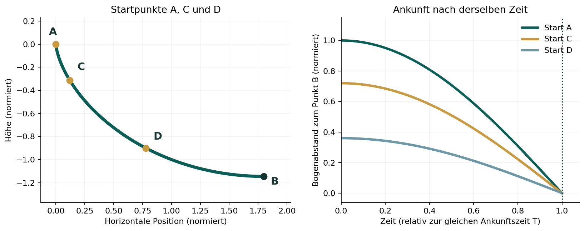
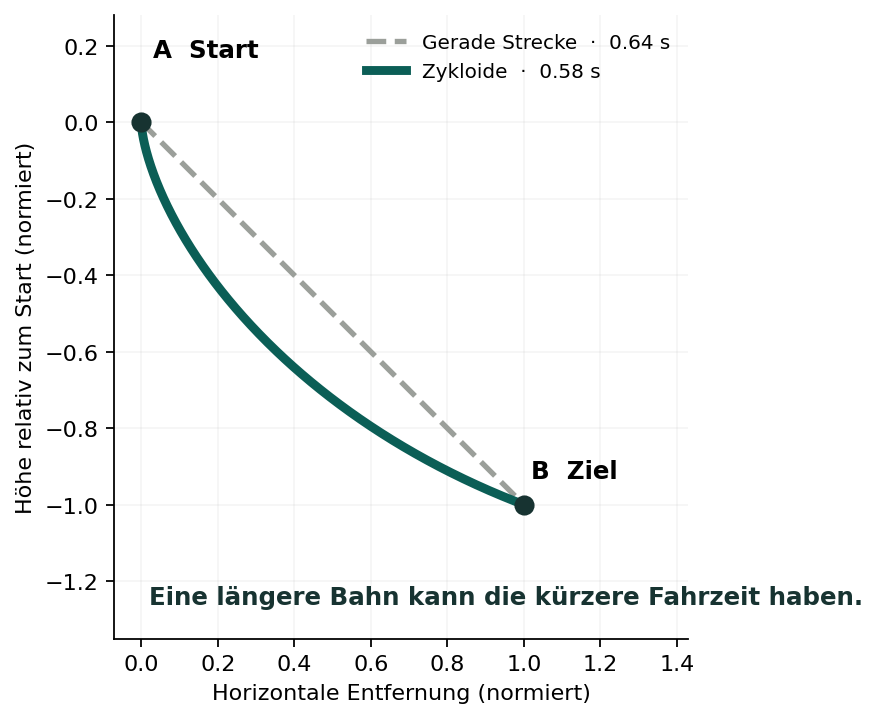
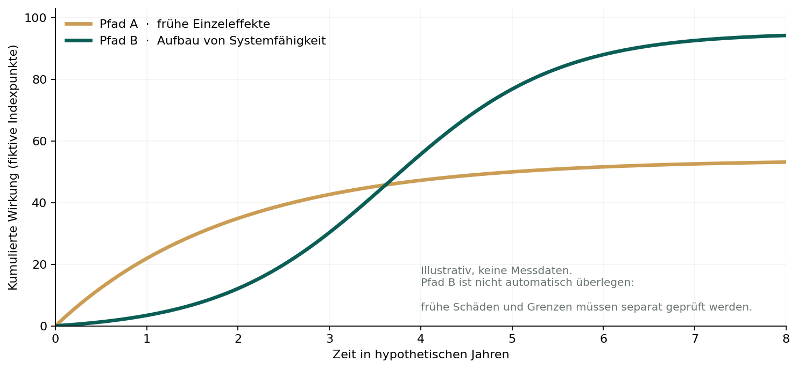

In diesem Dossier
- Abstract
- Kurzfassung in sechs Thesen
- 1. Ausgangspunkt: Ein physikalisches Rätsel stellt eine politische Frage
- 2. Die Physik: Zwei Probleme, eine bemerkenswerte Kurve
- 3. Drei verschiedene gesellschaftliche Optimierungsfragen
- 4. Anschluss an die bestehende Architektur der Wirkungsökonomie
- 5. Vorschlag einer dynamischen Modellarchitektur
- 6. Wirkungsbeschleunigung: hilfreich, aber nicht selbst das Ziel
- 7. Die Tautochronie-Analogie: Was gleiche Ankunftszeit gesellschaftlich heißen könnte
- 8. Anwendungsbeispiel Energiewende: schnell installieren oder systemisch ermöglichen?
- 9. Vorschlag für einen Wirkungs-Pfadcheck in neun Schritten
- 10. Forschungsprogramm: Hypothesen und mögliche Falsifikation
- 11. Grenzen, offene Konflikte und Schutz vor Überdehnung
- 12. Schluss: Nicht die kürzeste Strecke, sondern der tragfähige Wirkungspfad
- Literatur und Quellen
Status und wissenschaftliche Einordnung
Konzeptioneller Forschungsaufsatz (Version 1.0). Die physikalischen Sätze sind etablierte Mathematik. Die Übertragung auf Wirkungsökonomie ist eine eigenständige Hypothesen- und Methodenentwicklung, keine empirisch validierte Gesetzmäßigkeit und kein Ersatz für demokratische Entscheidungen.

Abstract
Dieses Dossier untersucht, ob die Brachistochrone (Bahn minimaler Fallzeit) und die Tautochrone (gleiche Ankunftszeit von unterschiedlichen Startpunkten) als heuristische Ausgangspunkte einer dynamischen wirkungsökonomischen Transformationslehre dienen können. Die zentrale Unterscheidung lautet: Minimale Eingriffskosten, minimale Zielerreichungszeit und maximale gesellschaftliche Netto-Wirkung über einen Zeitraum sind drei unterschiedliche Zielfunktionen. Aufbauend auf dem bestehenden Wirkungsrad, den Wirkungen erster bis dritter Ordnung sowie NWI, IOI und T-SROI wird eine pfadbasierte Prüfarchitektur vorgeschlagen. Sie modelliert Interventionen, Zustandsgrößen, Zeitverzüge, externe Wirkungen, Gegenfakten, irreversible Schäden, Verteilung und robuste Schutz-Gates. Das Tautochronie-Motiv wird eng gefasst: Es erinnert an die Bedeutung ungleicher Ausgangsbedingungen, behauptet jedoch nicht, gesellschaftliche Lebensläufe könnten mathematisch synchronisiert werden. Das Papier skizziert Forschungsfragen, formale Zielfunktionen, Anwendungsfelder und einen empirischen Pilot. Es ist ein Methodenentwurf, kein empirischer Wirksamkeitsnachweis.
Schlüsselbegriffe: Wirkungsökonomie · Wirkungsbrachistochrone · Tautochronie · dynamische Steuerung · Transformationspfade · Systemfähigkeit · Nichtkompensation · Verteilungsgerechtigkeit
Kurzfassung in sechs Thesen
- Ein scheinbar kurzer Pfad kann bei ungünstigen Systembedingungen länger bis zur Zielwirkung brauchen als eine zunächst aufwendigere Maßnahmesequenz.
- Die zeitliche Reihenfolge von Maßnahmen ist selbst ein Wirkfaktor. Voraussetzungen, Engpässe und Rückkopplungen können spätere Wirkung erst ermöglichen.
- Wirkungsbeschleunigung ist eine sinnvolle diagnostische Größe, aber allein keine gesellschaftliche Zielgröße: Negative und irreversible Zwischenfolgen bleiben relevant.
- Die Wirkungsbrachistochrone ist ein vorgeschlagenes Optimierungsverfahren unter pluralen Zielen und Schutzbedingungen, nicht die Behauptung einer einzigen universellen Kurve.
- Das Tautochronie-Prinzip ist eine vorsichtige Analogie für strukturelle Zugangsgerechtigkeit, nicht für identische Biografien oder eine Garantie gleicher Ergebnisse.
- Anschlussfähig wird die Idee nur mit überprüfbaren Gegenfakten, Unsicherheitsanalysen, Evidenzklassen, Partizipation und transparenter Rückkopplung an WÖk-Instrumente.
1. Ausgangspunkt: Ein physikalisches Rätsel stellt eine politische Frage
In einem auf LinkedIn verbreiteten Archivvideo erläutert der Physikvermittler Julius Sumner Miller eine außergewöhnliche Kurve. Zunächst zeichnet ein Punkt auf einem rollenden Rad eine Zykloide. Dann stellt der Moderator die Frage, welche Bahn zwischen zwei Punkten unter Schwerkraft die geringste Fallzeit benötigt. Zum Schluss variiert er den Startpunkt entlang derselben Bahn. Seine Demonstration liefert den Anlass für zwei unterschiedliche, aber miteinander verwandte Denkexperimente: Brachistochrone und Tautochrone. Der Originalbeitrag mit eingeblendetem Transkript ist in den Quellen verlinkt [1].
Die WÖk-Frage lautet nicht: „Ist unsere Gesellschaft eine Kugel auf einer Bahn?“ Sie lautet: „Bewerten wir Transformationsentscheidungen nach der richtigen Zielgröße, und berücksichtigen wir die zeitliche Architektur ihrer Wirkungen?“
2. Die Physik: Zwei Probleme, eine bemerkenswerte Kurve
2.1 Brachistochrone: kürzeste Zeit statt kürzester Weg
Johann Bernoulli stellte das Brachistochronenproblem 1696. Gegeben sind zwei Punkte in einer vertikalen Ebene, wobei das Ziel unterhalb und seitlich vom Start liegt. Ein idealer, reibungsfrei gleitender Massepunkt beginnt aus der Ruhe. Gesucht ist die Bahn mit minimaler Laufzeit. Die Antwort ist ein passend gewählter Abschnitt einer Zykloide. Ihre frühe steile Abwärtsbewegung lässt den Körper Geschwindigkeit gewinnen, die er später nutzt. Die gerade Linie ist kürzer, aber in diesem Fall nicht schneller [2].

Die Zykloide wird parametrisiert durch x = a(θ − sin θ), y = a(1 − cos θ). Für die Fallzeit gilt bei y als positiver Höhenverlust:
T[y] = (1/√(2g)) · ∫₀ᴸ √(1 + (dy/dx)²) / √y dx
Der funktionale Unterschied ist entscheidend: Minimiert wird nicht die Weglänge ∫ds, sondern die Zeit ∫ds/v. Die Geschwindigkeit v hängt selbst von der bereits überwundenen Höhe ab. Deshalb kann die Form des gesamten Pfads besser sein als eine lokale Abkürzung [2].
Grenzen: Für andere Randbedingungen (zum Beispiel ein exakt senkrecht darunterliegendes Ziel), Reibung, Antrieb, Hindernisse oder komplexe Rollkörper ändern sich Aussagen beziehungsweise das Modell. Die Zykloide ist keine universelle Abkürzungsformel.
2.2 Tautochrone: gleiche Ankunftszeit trotz verschiedener Distanzen
Die noch überraschendere Eigenschaft derselben Kurvenfamilie ist die Tautochrone, die Christiaan Huygens vor Bernoullis Optimierungsproblem untersuchte und 1673 im Kontext der Pendeluhr veröffentlichte. Entlang eines idealen, umgedrehten Zykloidenasts erreicht eine reibungsfrei gleitende Kugel den tiefsten Punkt B aus verschiedenen Startlagen (A, C, D) in derselben Zeit, sofern sie jeweils aus der Ruhe und zum selben Zeitpunkt freigegeben wird [3, 4].
Im idealisierten Modell lässt sich die verbleibende Bogenentfernung s zum Tiefpunkt als harmonische Bewegung beschreiben:
d²s/dt² + [g/(4a)] · s = 0; T_bis_B = π · √(a/g)
Dass die Zeit T unabhängig von der Startamplitude ist, folgt hier aus der speziellen Geometrie. Es ist eine Eigenschaft eines physikalisch exakt formulierten Systems und keine Aussage darüber, dass Menschen unabhängig von ihren Voraussetzungen automatisch gleich schnell ans Ziel gelangen.
2.3 Was daraus nicht folgt
Die Brachistochrone minimiert eine bestimmte Zeit unter festen Bedingungen. Die Tautochrone beschreibt Gleichzeitigkeit bei veränderten Startpunkten. „Schnellster Pfad“, „größter Gesamtnutzen“, „gerechte Chancen“ und „gleiche Ankunftszeit“ sind nicht dasselbe Problem. Eine gesellschaftliche Theorie darf diese Begriffe nicht vermengen. Physik liefert das Denkwerkzeug: präzise Zielfunktionen, dynamische Systemzustände und überprüfbare Randbedingungen. Sie liefert keine automatische moralische Rangordnung.
3. Drei verschiedene gesellschaftliche Optimierungsfragen
| Fragestellung | Beispiel der Zielfunktion | Wirkungsökonomische Warnung |
|---|---|---|
| Billigster/kurzester Eingriff | Minimiere sofortige Ressourcen oder Verfahrensschritte | Kann indirekte Folgekosten und Engpässe verlagern |
| Früheste Zielerreichung | Minimiere Zeit bis zu einem vorher legitimierten Mindestziel | Risiko unzulässiger Zwischenfolgen und Verteilungsblindheit |
| Größte tragfähige Netto-Wirkung | Bewerte zeitliche, mehrdimensionale Folgen und bleibende Systemfähigkeit | Benötigt transparente Gewichtungen, Schutz-Gates und Evidenz |
Transformationspfade besitzen Reihenfolgeeffekte: Ein Netzanschluss entsteht vor einer Netzeinspeisung; Bildungsqualität beeinflusst später die Umsetzbarkeit von Innovation; verlässliche Regeln beeinflussen Investitionsentscheidungen. Diese Vorbedingungen können die später realisierbare Wirkung verändern. Eine frühe Maßnahme ist aber nicht schon deshalb gut, weil sie ein „Fundament“ genannt wird. Ihr zusätzlicher Nutzen muss kausal belegt und ihren Alternativkosten gegenübergestellt werden.
Eine zweite Differenz betrifft die Zeit. Zwei Pfade können denselben Endzustand erreichen, aber bis dahin sehr unterschiedliche Schäden verursachen. Bei Emissionen ist dies physikalisch relevant, weil kumulierte CO₂-Mengen für die Erwärmung entscheidend sind [5]. Eine vermeintliche Aufholjagd nach Jahren des Nichtstuns ist deshalb nicht automatisch gleichwertig.
4. Anschluss an die bestehende Architektur der Wirkungsökonomie
Die Wirkungsökonomie besitzt bereits eine dynamische Logik. Das Wirkungsrad beschreibt Handlung oder Unterlassen, Wirkungspotenzial, tatsächliche Zustandsveränderung, Wirkungsordnungen, Bewertung, Lenkung, veränderte Anreize und erneutes Lernen [6]. Die hier vorgeschlagene Wirkungsbrachistochrone ergänzt diese Architektur um eine explizite Frage der zeitlichen Pfadwahl und der Maßnahmenreihenfolge. Sie behauptet nicht, dass die WÖk bisher statisch gewesen sei.
| Bestehendes WÖk-Instrument | Anschluss der neuen Pfadmethode |
|---|---|
| Wirkungsrad | Rückkopplung und adaptive Korrektur der gewählten Maßnahmenfolge |
| Wirkung 1./2./3. Ordnung | Unmittelbare Effekte, Anschlussfolgen und veränderte Systemregeln getrennt modellieren |
| Wirkungspotenzial vs. Wirkung | Ex-ante-Simulation als Potenzial markieren; Ex-post-Effekte belegen |
| NWI / Scorecards / WÖk-IDs | Mehrdimensionale Profile, Datenherkunft, Relevanz und Risiken offenlegen |
| IOI | Direkte kausal monetarisierte Netto-Wirkung bezogen auf Ressourcen |
| T-SROI v1.1 | Direkte und gesondert belegte transformative Netto-Nutzenströme zeitlich bewerten |
| Reverse Merit Order / Schutz-Gate | Schutzrechte und kritische Negativwirkungen nicht mit anderen Gewinnen verrechnen |
Der aktuelle T-SROI-Standard v1.1 verlangt für transformative Zusatznutzen eine eigenständige Kausalkette, klare Gegenhypothese, sauber definierte Empfänger und Zeiträume, ein Schutz-Gate sowie die Vermeidung von Doppelzählungen [7]. Der neue Pfadansatz sollte genau diese Regeln übernehmen. „Wirkungsbeschleunigung“ wäre kein pauschaler Multiplikator auf den T-SROI.
5. Vorschlag einer dynamischen Modellarchitektur
5.1 Systemzustände, Interventionen und Rückkopplungen
Sei x(t) ein Vektor gesellschaftlicher Zustände, zum Beispiel Emissionsbestand, Netzverfügbarkeit, Ausbildungskapazität, Gesundheit, institutionelle Belastbarkeit und Teilhabe. u(t) ist ein Bündel gestaltbarer Maßnahmen, beispielsweise Investitionen, Regeln oder Förderprogramme. ω beschreibt unsichere Einflussfaktoren. Die Systemdynamik lautet in abstrakter Form:
dx/dt = f(x(t), u(t), t, ω)
Diese Gleichung ist eine Modellstruktur, noch kein aus Daten geschätzter Zusammenhang. Sie zwingt dazu, Annahmen über Verzögerungen, Engpässe, Wechselwirkungen und Kausalität sichtbar zu machen. Die OECD warnt bei komplexen Systemen ausdrücklich vor linearer Kausalität und einer einzigen optimalen Lösung [8].
5.2 Tatsächliche zusätzliche Wirkung und Gegenfaktik
Für jede Wirkungsdimension k ist die beobachtete Entwicklung unter einer Maßnahme mit einem plausiblen Gegenfaktum ohne diese Maßnahme zu vergleichen. Nicht alles, was zeitgleich besser wird, ist der Intervention zuzuschreiben. Die jährliche zusätzliche Wirkung kann als ρ_k(t;u) bezeichnet werden. Der kumulierte Effekt lautet:
W_k(t) = ∫₀ᵗ ρ_k(τ;u) dτ
Dann ist dW_k/dt die zusätzliche Wirkungsrate und d²W_k/dt² ihre Veränderung (Wirkungsbeschleunigung). Diese Ableitungen sind nur interpretierbar, wenn W_k sinnvoll messbar, vergleichbar und nicht bereits eine willkürlich gemischte Punktzahl ist. Empirische zweite Ableitungen sind oft stark verrauscht und müssen geglättet und mit Unsicherheiten ausgewiesen werden.
5.3 Zwei legitime Optimierungsformen
Variante A, eine zeitkritische Schwelle: Minimiere die Zeit T*, bis ein demokratisch legitimiertes Zielprofil dauerhaft erreicht ist. Dabei gelten für alle Zwischenzustände Schutz- und Budgetbedingungen. Das ist die engere Analogie zur Brachistochrone.
T* = inf {t ≥ 0 : x(τ) ∈ Zielmenge für alle τ ∈ [t, t+Δ]}
Variante B, mehrere gesellschaftliche Wirkungen: Erzeuge für jede Dimension k ein getrenntes zeitliches Wirkungsprofil J_k(u) und vergleiche die nicht dominierten Pfade (Pareto-Menge). Nur bei normativ und methodisch begründeten Gewichten ließe sich daraus eine aggregierte Zielfunktion bilden:
J_k(u) = ∫₀ᴴ β_k(t) · ρ_k(t;u) dt + V_k(x(H))
Hier sind β_k(t) offen gelegte zeitliche Bewertungsfaktoren; V_k ist nur zulässig, wenn es keine bereits gezählten Wirkungen doppelt erfasst. H bezeichnet den Beobachtungshorizont. Ein einzelnes optimales J ist kein Naturgesetz, sondern hängt von Zielen, Gewichten und empirischen Annahmen ab.
5.4 Nichtkompensierbarkeit als harte Nebenbedingung
Unzulässige Grundrechtsverletzungen, Verletzungen ökologischer Mindestschwellen und nicht tragbare Risiken werden nicht durch hohe Wirkungswerte anderswo aufgewogen. Formal ist jeder zulässige Maßnahmenpfad auf einer vorab festgelegten Menge an Nebenbedingungen zu prüfen:
g_j(x(t),u(t)) ≥ 0 für alle relevanten j und t; Schutz-Gate = offen
Diese harte Einschränkung ist ein zentraler Unterschied zu einem rein mathematischen „schnellsten Weg“. Gesellschaftliche Ziele werden demokratisch festgelegt, Modelle dürfen sie nicht heimlich ersetzen.
6. Wirkungsbeschleunigung: hilfreich, aber nicht selbst das Ziel
Eine schnell wachsende Wirkungsrate kann anzeigen, dass die Voraussetzungen eines Systems verbessert wurden. Beispiele sind schnellere Netzintegration nach Genehmigungsreformen, stabilere Prävention nach Ausbau von Gesundheitsdiensten oder beschleunigte Innovation nach besserer Bildung. Sie kann aber auch den falschen Indikator beschleunigen, Schäden auf andere Gruppen verlagern oder nur eine statistische Kurvenänderung zeigen. Ein hoher Wert von d²W/dt² ist deshalb ein Diagnosehinweis, keine politische Rechtfertigung.

Eine wichtige Folgerung lautet: Der Pfad mit der höchsten Endwirkung ist nicht automatisch der Pfad mit der besten zeitlichen Gesamtbilanz. Umgekehrt kann es bei Klima- oder Gesundheitsschäden ethisch problematisch sein, dringende direkte Maßnahmen mit dem Versprechen späterer Beschleunigung zurückzustellen.
7. Die Tautochronie-Analogie: Was gleiche Ankunftszeit gesellschaftlich heißen könnte
Im physikalischen Modell erscheinen A, C und D weit auseinander. Wer von D startet, hat eine kürzere Bogenstrecke als von A. Trotzdem führt die besondere Bahngeometrie bei idealen Bedingungen zur selben Ankunftszeit. Die gesellschaftliche Frage lautet: Könnten öffentliche Systeme so gestaltet sein, dass unterschiedliche Ausgangslagen weniger stark über Zugang und tatsächliche Teilhabe entscheiden?
Ein brauchbarer Anwendungsfall wäre der Zugang zu beruflicher Weiterbildung oder digitaler Verwaltung: Manche Menschen benötigen Dolmetschung, barrierefreie Technik, Betreuung oder Beratung, andere nicht. Gleiche Formulare und gleiche Fristen erzeugen deshalb keine gleichen realen Chancen. Faire Systemgestaltung kann unterschiedliche Unterstützung vorsehen, ohne die Freiheit oder Verschiedenheit von Menschen zu leugnen.
Unbedingt unterscheiden
Die Tautochrone ist ein physikalischer Isochroniesatz. „Wirkungs-Tautochronie“ ist hier lediglich eine normative Designheuristik: Ungleichheit von Startbedingungen ernst nehmen, Hürden identifizieren und sinnvolle Zugangszeiten beziehungsweise Teilhabe verbessern. Keine Behauptung exakt gleicher Lebenszeiten, gleicher Fähigkeiten oder identischer Ergebnisse.
Die überprüfbare Forschungsfrage wäre nicht „Kommen alle in exakt derselben Zeit an?“, sondern beispielsweise: „Reduziert ein angepasstes Unterstützungsangebot die vermeidbare Streuung der Zeit bis zu einem definierten Zugangsergebnis, ohne Rechte oder Mindestqualität zu verletzen?“ Gleichberechtigter Zugang darf auch andere Ziele als reine Zeitgleichheit haben.
8. Anwendungsbeispiel Energiewende: schnell installieren oder systemisch ermöglichen?
Die Internationale Energieagentur beschreibt Stromnetze als wesentlichen Engpass der Energiewende. Noch 2025 warteten erhebliche Mengen fortgeschrittener erneuerbarer Projekte auf Anschluss; ihre Berichte betonen Netzausbau, bessere Netznutzung und Flexibilität [9, 10]. Diese Befunde zeigen einen realen Mechanismus für pfadabhängige Wirkung. Sie belegen aber nicht, dass es überall denselben idealen politischen Maßnahmenpfad gibt.
| Pfad | Möglicher kurzfristiger Effekt | Möglicher mittel-/langfristiger Effekt |
|---|---|---|
| A: Nur zusätzliche Erzeugungsförderung | Schnelle Planung neuer Erzeugungskapazität | Bei Netzengpässen begrenzte Nutzung oder Wartezeiten |
| B: Nur Systemvorleistungen | Anfangs wenig sichtbare zusätzliche Erzeugung | Spätere Anschluss- und Flexibilitätsfähigkeit verbessert |
| C: Koordinierte Sequenz | Sofort nutzbare Erzeugung + Engpassabbau | Geringeres Verzögerungsrisiko und potenziell höhere kumulierte Emissionsminderung |
Die Hypothese lautet nicht „B ist besser als A“, sondern: Eine adaptive Kombination C könnte in vielen Regionen eine höhere tragfähige Wirkung erreichen. Zu prüfen wären tatsächliche Netzdaten, Emissionsminderungen im Zeitverlauf, Verdrängung, Kosten, verfügbare Fachkräfte, regionale Verteilung, Ausfallrisiken und die Wirkungen des Nicht-Handelns. Besonders die kumulierten Emissionen müssen explizit bilanziert werden; das IPCC hebt ihren Einfluss auf das Temperaturziel hervor [5].
9. Vorschlag für einen Wirkungs-Pfadcheck in neun Schritten
- Entscheidungsfrage klären: Welcher Zustand soll bis wann erreicht werden, und wer legitimiert das Ziel?
- Grenzen und Schutzrechte vorab definieren: Was darf selbst bei hohem sonstigem Nutzen nicht geschehen?
- System und Gegenfaktum abgrenzen: Betroffene Gruppen, Regionen, Zeiträume, Trends und mögliche Verlagerung.
- Wirkungsketten erster bis dritter Ordnung skizzieren: direkte Effekte, Anschlussfolgen, institutionelle Hebel.
- Ressourcen, Zeitverzüge und Engpässe erheben: Kapazität, Akzeptanz, Fähigkeiten, Finanzierung, Genehmigung.
- Mehrere reale Maßnahmenfolgen modellieren: inklusive Sofortmaßnahmen, Systemvorleistungen und Kombinationen.
- Ex-ante-Pfade mit Unsicherheiten prüfen: Zeit bis zur Zielschwelle, kumulierte Wirkungen, Verteilung, Schutz-Gate.
- Kleine überprüfbare Piloten durchführen: Daten und unabhängige Gegenfakten erfassen; Annahmen korrigieren.
- Ex-post-Wirkung und neue Zustände veröffentlichen: die nächste Planungsrunde im Wirkungsrad aktualisieren.
Eine Entscheidungsmatrix sollte mindestens vier getrennte Spalten besitzen: Zeit bis zum Ziel, tatsächlich erzielte kumulierte Netto-Wirkung, Verteilungs-/Schutzprofil und Unsicherheitsniveau. Eine unzulässige Schutzverletzung sperrt den betreffenden Pfad unabhängig von einer attraktiven Summenkennzahl.
10. Forschungsprogramm: Hypothesen und mögliche Falsifikation
| Hypothese | Prüfidee | Was würde sie widerlegen? |
|---|---|---|
| H1: Engpassabbau kann spätere Wirkung beschleunigen. | Zeitreihen und Vergleichsregionen vor/nach Kapazitätsinvestitionen | Kein robuster Zusatznutzen gegenüber plausiblen Gegenfakten |
| H2: Reihenfolge ist wirkungsrelevant. | Gleiche Maßnahmenbündel in unterschiedlicher zeitlicher Sequenz vergleichen | Keine relevanten Reihenfolgeeffekte im untersuchten System |
| H3: Zeitbewertung ändert Priorisierung. | Statische Scorecards gegen dynamische Pfadbilanz vergleichen | Prioritäten bleiben unter plausiblen Parametern identisch |
| H4: Zugangsdesign reduziert vermeidbare Startnachteile. | Verteilung der Zeit bis zu realem Zugang, Qualität und Rechte prüfen | Unterschiede bleiben oder neue Benachteiligungen entstehen |
Als Pilot eignet sich ein klar begrenzter kommunaler Kontext: mehrere Varianten eines Energie- oder Bildungsprogramms mit bereits vorhandenen Administrativdaten, vergleichbaren Ausgangslagen, dokumentierter Wirklogik und vereinbarten Schwellenwerten. Es braucht die Bereitschaft, auch null oder negative Befunde zu veröffentlichen.
11. Grenzen, offene Konflikte und Schutz vor Überdehnung
- Analogie statt Beweis: Gesellschaften sind keine konservativen mechanischen Systeme mit bekannter Potenzialfunktion.
- Pluralität und Demokratie: Ziele, Kompromisse und Grenzen entstehen nicht aus einer Euler-Lagrange-Gleichung.
- Kausalität und Daten: Prognosen bleiben Wirkungspotenziale; beobachtete Effekte erfordern überprüfbare Gegenfakten.
- Pfadabhängigkeiten und Kipppunkte: Kleine Interventionen können qualitativ andere Ergebnisse erzeugen.
- Evidenz und Goodhart-Risiko: Ein Wirkungsbeschleunigungsindex darf kein manipulierbares neues Leistungsziel werden.
- Rechte und Würde: Menschen werden nicht als „Kugeln“ klassifiziert oder nach „Startposition“ bewertet.
- Keine freie Monetarisierung: Nicht bewertbare oder nicht monetarisierbare Folgen bleiben gesondert und können die Entscheidung blockieren.
- Frühe irreversible Schäden: Ein späterer Vorteil legitimiert nicht beliebige Verzögerungen bei Emissionsminderung, Gesundheit oder Grundrechten.
Die methodische Ergänzung sollte zur bestehenden WÖk-Regel passen: Ein Modell erweitert die Informationsbasis. Die Entscheidung bleibt demokratisch, rechtsstaatlich, revidierbar und an realen Wirkungen überprüfbar [6, 7, 8].
12. Schluss: Nicht die kürzeste Strecke, sondern der tragfähige Wirkungspfad
Die Brachistochrone lehrt die präzise Frage nach der Zielgröße. Die Tautochrone lehrt, dass Ausgangslagen und Systemgeometrie gemeinsam über Zeitverläufe entscheiden. Die Wirkungsökonomie kann daraus einen eigenständigen methodischen Schritt entwickeln: nicht nur bewerten, ob eine Maßnahme positive Wirkung erzielt, sondern vergleichen, wann, in welcher Reihenfolge und unter welchen Bedingungen mehrere Maßnahmen zusammen eine bessere gesellschaftliche Entwicklung ermöglichen.
Ein solcher Pfad ist weder eine universelle Formel noch die längste denkbare Abkürzung. Er ist eine überprüfbare, anpassungsfähige Entscheidung unter Unsicherheit, pluralen Wirkungen und unüberschreitbaren Schutzgrenzen. Sein Erkenntniswert besteht gerade darin, dass er falsche Einfachheit sichtbar macht.
Kernsatz
Die Wirkungsbrachistochrone sucht nicht den kürzesten Weg durch ein bestehendes System. Sie untersucht, welche Folge von Handlungen das System so verändert, dass tragfähige positive Wirkung früher, umfassender und gerechter möglich wird.
Literatur und Quellen
[1] Suresh Babu, LinkedIn-Beitrag mit Archivvideo und Transkript, abgerufen 20.11.2026. Quelle öffnen
[2] Wolfram MathWorld: Brachistochrone Problem. Quelle öffnen
[3] Wolfram MathWorld: Tautochrone Problem. Quelle öffnen
[4] Huygens und die Tautochrone: The European Physical Journal Plus (2026). Quelle öffnen
[5] IPCC: AR6 Synthesis Report, Summary for Policymakers. Quelle öffnen
[6] Weber, N.: Die neue Ordnung des Wohlstands, Kapitel 21 - Das Wirkungsrad. Quelle öffnen
[7] Wirkungsökonomie: T-SROI-Rechenstandard v1.1. Quelle öffnen
[8] OECD/IIASA: Systemic Thinking for Policy Making (2020), Executive Summary. Quelle öffnen
[9] IEA: Electricity Grids and Secure Energy Transitions - Executive Summary. Quelle öffnen
[10] IEA: Modernising Grids in the Age of Electricity (2026). Quelle öffnen
[11] HM Treasury: The Green Book (2026), Zeitpräferenz, Verteilung, Unsicherheit. Quelle öffnen
[12] Weber, N.: Die neue Ordnung des Wohlstands, Kapitel 18 - Wirkungsordnungen. Quelle öffnen
[13] Australian Broadcasting Corporation: Why is it so? - Julius Sumner Miller. Quelle öffnen
Quellenhinweis: [1] ist eine repostete historische Fernsehszene. Originalsender, Jahr und konkrete Nutzungsrechte genau dieses Ausschnitts sind aus dem LinkedIn-Post allein nicht eindeutig belegbar. Die physikalischen Aussagen wurden mit unabhängigen Fachquellen gegengeprüft.